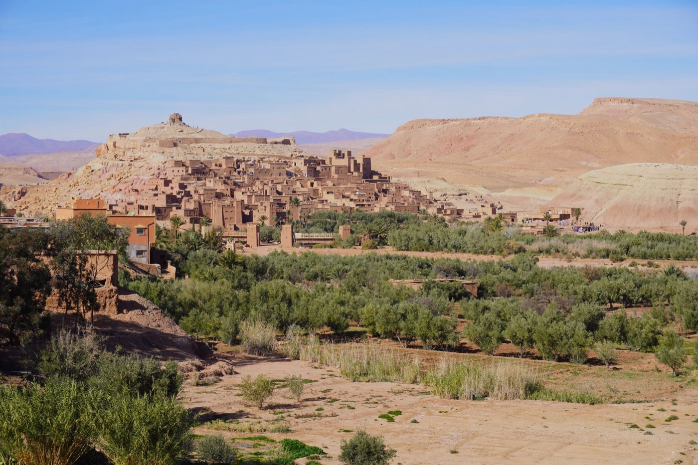
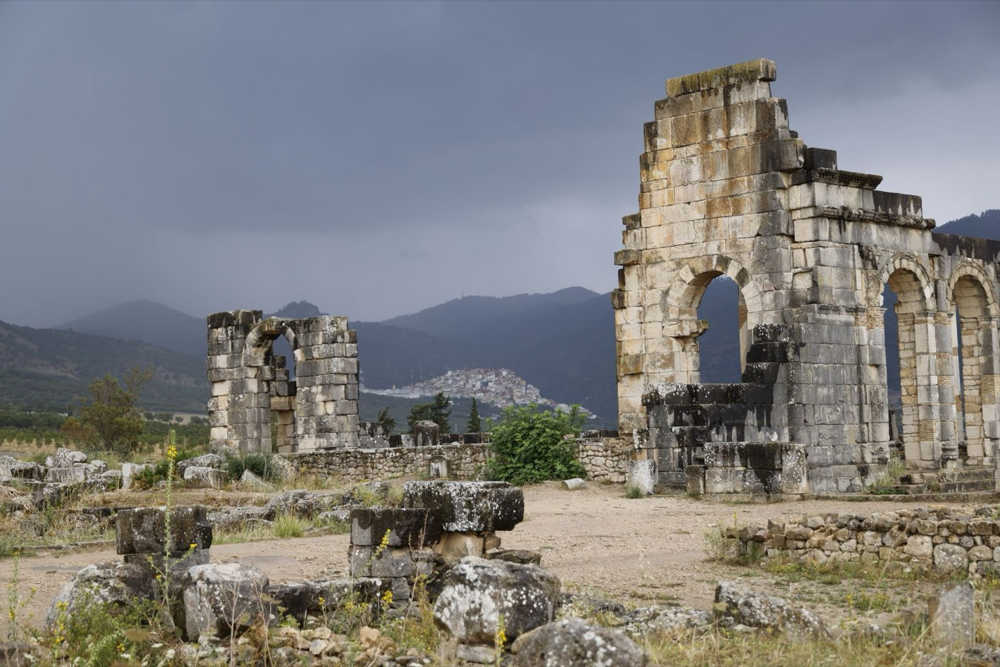
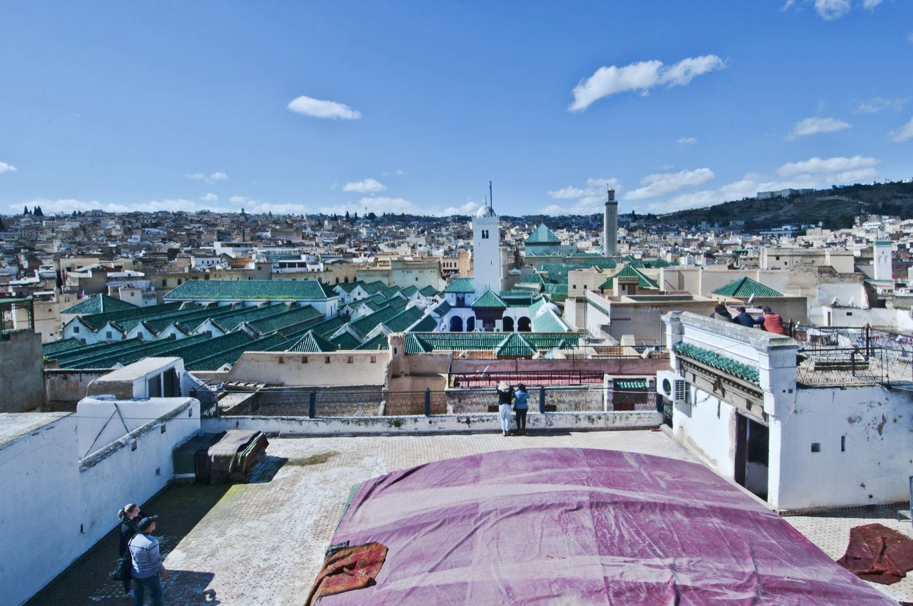
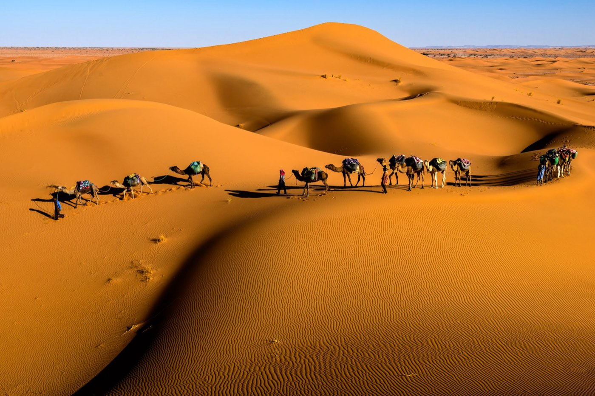

Circuit accompagné
Sur les routes du Maroc
Marrakech, Casablanca, Rabat, Fès, le Sahara et l'Atlas, avec guide accompagnateur et vols depuis Genève.

Un musée à ciel ouvert.
La médina de Meknès et les vestiges du palais royal lui ont valu d'être inscrite au patrimoine mondial de l'UNESCO. Sur la place El Hédime, Bab Mansour est la porte d'entrée de la médina. C'est l'un des chefs-d'œuvre de l'art hispano-mauresque. N'oubliez pas de visiter les écuries royales et les greniers du sultan Moulay Ismail.
Au nord de Meknès se trouve le plus grand site archéologique romain du Maroc : Volubilis. Arc de triomphe, capitole, maison de Bacchus, tout témoigne de la splendeur qu'a connue la ville et de son poids économique et politique.

Marrakech, Casablanca, Rabat, Fès, le Sahara et l'Atlas, avec guide accompagnateur et vols depuis Genève.

Casablanca, Rabat, Meknès, Volubilis, Fès et Marrakech, avec guide et transferts privés.

De Tanger à Marrakech par Chefchaouen, Fès, Merzouga et la vallée du Drâa, avec une nuit sous tente.